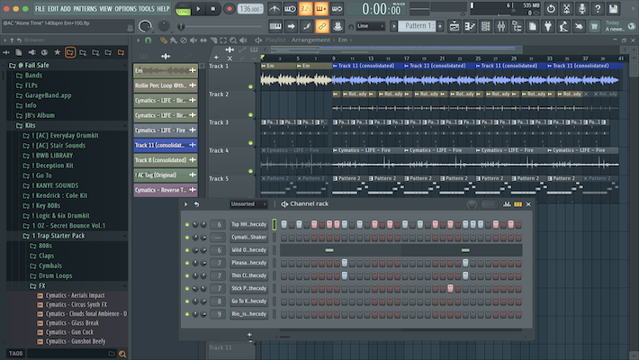

How To Make a Song
The 4 Big Steps
- Create or download a beat in the genre you want to make
- Write you're lyrics, include a catchy chorus and verses that tell a story
- Record your vocals over the beat in software like Garageband or Logic Pro X
- Mix your track, add effects, master, and you're done!
